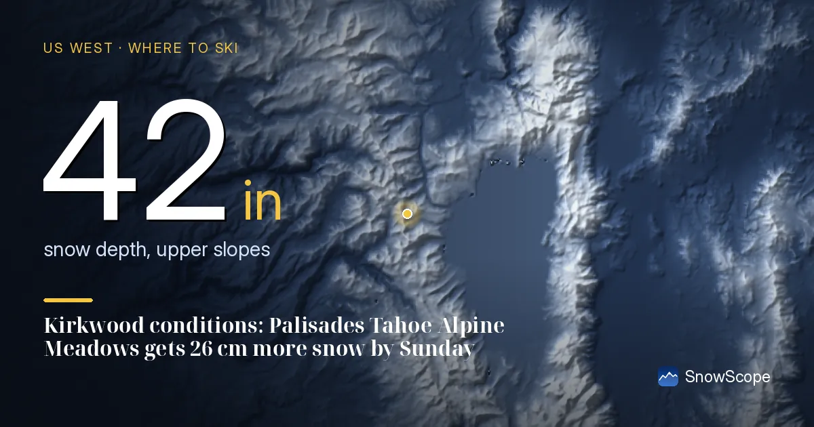
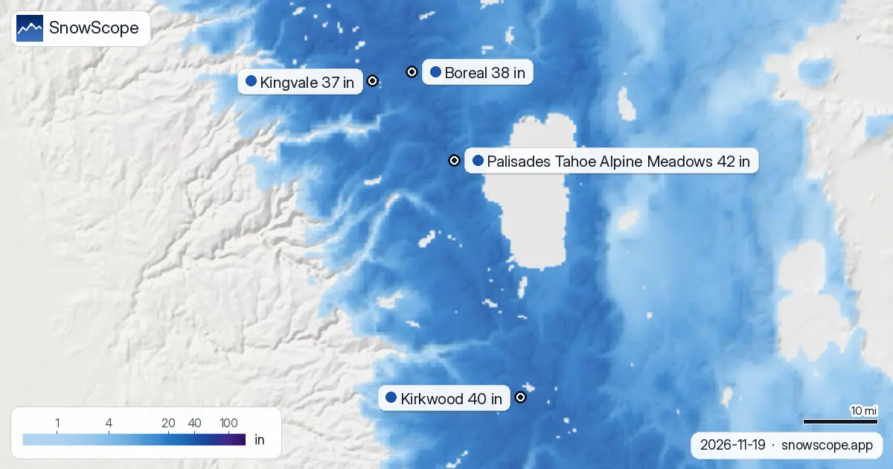

Kirkwood conditions: Palisades Tahoe Alpine Meadows gets 26 cm more snow by Sunday
Kirkwood conditions – Palisades Tahoe Alpine Meadows sits under a system that brought 45 cm (18 in) in the last 24 hours and will add another 26 cm (10 in) over the next three days. The best snow for skiing lies on the high slopes, where measured depths already exceed what most winters see by mid-November.
See the live snow forecast for Palisades Tahoe Alpine Meadows in the SnowScope appSnow depth, powder alerts and the 3D map, free.
What is falling and when
Yesterday was the heavy day: 45 cm fell on the upper slopes at Palisades Tahoe Alpine Meadows. The forecast calls for 14 cm on Friday, then a dry Saturday, then 12 cm on Sunday. That rhythm matters—Friday morning could offer fresh tracks, Saturday will be skied out unless it stays cold overnight, and Sunday brings new snow but fewer hours of daylight.
Three metres above the base, Kirkwood caught 53 cm in the last 24 hours, slightly more than Palisades Tahoe Alpine Meadows. Kingvale saw 49 cm. The storm has been consistent across the Sierra Nevada, so whichever resort you choose, the snow depth story is similar.
| Resort | Snow depth | New snow, 72 h | Coming, next days | Top |
|---|---|---|---|---|
| Palisades Tahoe Alpine Meadows | 42 in (107 cm) | 26 in (66 cm) | 10 in (26 cm) | 8,494 ft (2,589 m) |
| Kingvale | 37 in (94 cm) | 29 in (73 cm) | 10 in (26 cm) | – |
| Kirkwood | 40 in (102 cm) | 28 in (71 cm) | 8 in (20 cm) | 9,462 ft (2,884 m) |
| Boreal | 38 in (97 cm) | 27 in (69 cm) | 10 in (25 cm) | 7,700 ft (2,347 m) |

Where the best snow sits
At Palisades Tahoe Alpine Meadows, the upper slopes hold 107 cm (42 in) today. The mid-elevation zone, around 2,243 metres, has 72 cm (28 in). The base sits at just 52 cm (20 in). This is the classic early-season picture: thick snow up high, thin snow down low. Kirkwood's base reaches 2,382 metres, so it stays higher and holds more snow across all elevations.
The freezing level today ranges from 1,160 metres to 1,820 metres at Palisades Tahoe Alpine Meadows. That means wet snow at mid-slopes in the afternoon. Friday the freezing level drops to near ground level in the morning, then rises again. Saturday it rises higher still, to around 1,970 metres. This matters for how the snow sets overnight—Friday night into Saturday will be cold and hard; Saturday night will be less so.
How this season compares
At 2,243 metres on Palisades Tahoe Alpine Meadows, the snow model shows 79 cm depth today. In the 46 past winters we have on record, only 46 of them had more snow at this elevation on this date. That is a strong start. The usual depth here on 19 November is just 9 cm. So you are looking at nearly nine times the median.
Kirkwood's mid-elevation sits at 88 cm, deeper than 41 of those past 46 winters. Boreal's mid-zone holds 83 cm. These numbers sit well above normal for November, though remember this is thin snow by late-season standards. Rocks are still close to the surface.
What to watch on the mountain
The avalanche danger is rated 3 (considerable) at both Palisades Tahoe Alpine Meadows and Kirkwood. That means unstable snow exists on some slopes. Before going off-piste, read the official avalanche bulletin on avalanche.org. Steep north-facing slopes hold snow longest and tend to stay colder and more stable early in the season.
Early-season snow is often loose and uncompacted. Stick to groomed pistes where the base crew can prepare the terrain safely. The difference between a marked run and unmarked gullies is significant when snow is this young and thin.
The weekend choice
Friday brings 14 cm of new snow on top of the 72 cm mid-elevation base at Palisades Tahoe Alpine Meadows. That will refresh the surface. Saturday is forecast dry, so tracks set Friday will persist. Sunday brings 12 cm more but only a few hours of light. If you can ski Friday morning or Saturday morning, you will find better snow. Check the resort website for lift opening times—not all lifts run early in the season.
Three practical moves
First, aim for high lifts and north-facing slopes. They hold the most snow and stay cooler longer. Second, start early: morning snow is better preserved and more forgiving. Third, stay on marked terrain. The snow depth map shows promise, but thin snow hides rocks. Groomed runs are prepared and safer.
Tips for skiers
- Ski Friday morning after overnight snow sets; tracks from Thursday will still be skiable on Saturday if the forecast holds dry.
- Ride high lifts and seek north-facing slopes, where snow cover is thickest and lasts longest through the day.
- Stay on groomed pistes; early-season snow is thin and loose, and rocks are close to the surface even where our model shows decent depth.
- Check the official avalanche bulletin at avalanche.org before leaving marked terrain; danger is rated 3 (considerable) this week.
- Confirm lift opening times on the resort website before you drive; not all lifts open in November.
About these numbers
Resort snow depths are the deepest snow on the resort's upper slopes from the SnowScope snow model (about 1 km, run of 18 November); they are estimates for an area, not a measurement at one point. Station values are measurements on the date shown. Forecasts can change. Always read the official avalanche bulletin before going off-piste.
Official avalanche bulletins: avalanche.org (US national portal)
Cite this report
For research, teaching or the press: the numbers and charts are free to reuse under CC BY 4.0 with this citation.
SnowScope (2026), Kirkwood conditions: Palisades Tahoe Alpine Meadows gets 26 cm more snow by Sunday, https://snowscope.app/blog/en/2026/11/us-west-where-to-ski-this-weekend-19-november-2026.html, accessed 2026-11-19
SnowScope (Atlas Labs). (2026, November 19). Kirkwood conditions: Palisades Tahoe Alpine Meadows gets 26 cm more snow by Sunday. SnowScope snow reports. https://snowscope.app/blog/en/2026/11/us-west-where-to-ski-this-weekend-19-november-2026.html
BibTeX
@misc{snowscope2026uswestwheretoskithisweek,
author = {{SnowScope (Atlas Labs)}},
title = {Kirkwood conditions: Palisades Tahoe Alpine Meadows gets 26 cm more snow by Sunday},
year = {2026},
month = nov,
howpublished = {\url{https://snowscope.app/blog/en/2026/11/us-west-where-to-ski-this-weekend-19-november-2026.html}},
note = {Published 2026-11-19 21:45 UTC; accessed 2026-11-19}
}· CC BY 4.0 · Methods, data and tools →
Palisades Tahoe Alpine Meadows: snow and temperature by height, this winter vs last (tools) →
Follow Palisades Tahoe Alpine Meadows
Free: a message when fresh snow is coming, and the forecast every morning.
More snow reports

Seven independent ski areas in the West where an adult day ticket costs from $49 to $98.8 on weekdays, compared with the snow they usually have in December.

Heavenly, Sierra-at-Tahoe and Mt. Rose have more snow on 19 November than in any winter since 1980-81. How much fell, the measured gauges, the weather behind it and the best days to go.